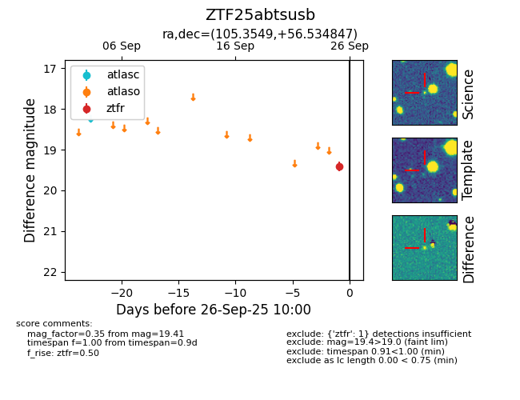

FINK: ZTF25abtsusb
Lasair: ZTF25abtsusb
ALeRCE: ZTF25abtsusb
ZTF25abtsusb (ztf,fink)
equatorial (ra, dec) = (105.3549,+56.53485)
galactic (l, b) = (159.9161,+23.68822)

last ztfr=19.41
1 ztfr detections